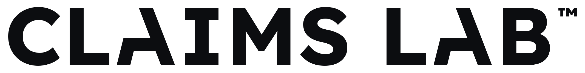

A focused season of research, claims, and narratives — ready for your next planning cycle.
Your science moves faster than your claims.
The evidence in your category grows every year — but the ability to capture it, convert it into claims, and bring it to market lags behind. Claims Lab™ keeps your brand on pace with the science. Built for brands that need an edge: active science, an ambitious marketing team, and a competitive category.
The science moves fast
New studies and mechanisms surface every year — far more than any brand can chase in-season.
Claims lag behind
Marketing keeps reusing the same few lines while the evidence quietly gets richer.
Planning can't wait
By the time next year's briefs land, there's no runway to research, clear, and test something new.
The Goal
By your next planning cycle: meaningfully new stories, ready to go.
Everything in the Lab points at one outcome — when planning begins, you have meaningfully new Science Stories™: new claims, new narratives, already validated and ready to activate.
New things to say
Claims the brand has never made before — pulled from science that already exists.
Stories, not just lines
Claims grouped into narratives a campaign can actually be built around.
Ready to activate
Validated through MLR and consumers — so you start with go-ready material, not a to-do list.
The Standards
Every claim clears the same four-part bar.
A claim only earns a place in your arsenal if it meets all four standards — so what you take into planning is ready to use, not just interesting.
Research-backed
Grounded in the full published evidence — read, mapped, and weighed.
Regulatory-friendly
Worked through MLR so the language can actually survive review.
Consumer-tested
The strongest narratives validated with real people before you commit.
Rooted in real needs
Aimed at the moments and motivations that actually drive the category.
The Flow
Five steps, start to finish.
The whole engagement runs as one clear sequence — each step hands the next exactly what it needs, and it all lands before your next planning cycle.
Territories
Imagine what your brand could say next year — beat the competition, reach specific populations, own key symptoms — and pick the priority territories to chase.
Research
Run the AI Lit Review™ across those territories and extract pre-compliant claims with Claim Dev™.
Approval
Bring the research and claims to MLR and work through to an approved claims list.
Science Story™
Group approved claims into clusters and write consumer-friendly narratives.
Validation
Test the new stories with real consumers, then finalize what resonates.
The Six Months
One step a month — with room to spare.
A concentrated six-month push — typically July through December. The five steps run one a month, landing your new Science Stories™ before next-year planning. The sixth month is built-in flexibility: a buffer for a longer MLR or testing cycle, and room to tack on lower-priority or newly surfaced territories.
Jul–Nov · one step a month
Territories, Research, Approval, Science Story™, Validation — in sequence.
A buffer for timing
December absorbs any spillover — so a longer MLR cycle or testing round never derails the finish.
Room for more
December also stays open for lower-priority, higher-risk, or newly surfaced territories.
What's Included
Everything in one season — aligned research territories, a full Lit Review™ and Claim Dev™, MLR-ready claim language, Science Story™ narratives, consumer validation, and a living claim repository you carry into planning.
Claim Dev™ organizes the claims you already know you need. Claims Lab™ is the season that keeps finding the ones you don't yet know to look for — and tests the strongest before you build on them.
FAQ
Claims Lab™ — common questions
What is Claims Lab™?
A focused, six-month season of research, claims, and narratives — timed to your annual planning cycle. It runs as one sequence (territories, research, MLR approval, Science Story™, validation) and lands a repository of go-ready claims before planning begins.
When does it run, and for how long?
Six months — typically July through December — so the work lands in time for next-year planning. The fifth step finishes by November; December is built-in buffer and room for extra territories.
How is it different from Claim Dev™?
Claim Dev™ is a project that organizes a defined set of claims from your existing science. Claims Lab™ runs that same rigor as a full season — imagining new territories, researching them, clearing MLR, shaping Science Stories™, and validating the strongest with consumers.
Do you test the claims and stories?
Yes. The strongest Science Stories™ are validated with real consumers before you commit — so you build on what actually resonates, not on a guess.
Do we need the full Science Marketing Engine?
No. Claims Lab™ can run alongside the Engine or on its own, for teams with active science that want a focused season of claim and story development.
Let's build your next claim arsenal.
Six months. One sequence. A repository of research-backed, regulatory-friendly, consumer-tested claims — ready to activate.
Reach Out About Claims Lab™